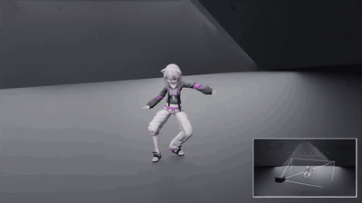
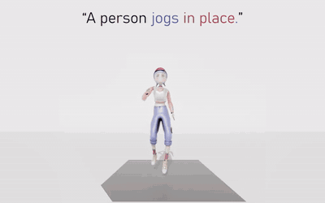
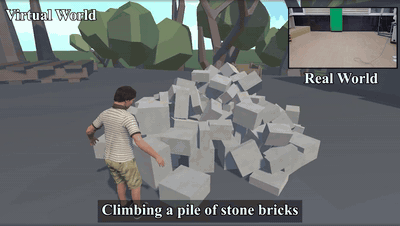

SIGGRAPH Asia 2026To appear

Ph.D. Student, IIIXR Lab, Korea University
I am a Ph.D. student in the IIIXR Lab, advised by Dr. HyeongYeop Kang. My research focuses on immersive virtual reality experiences, realistic character animation, and embodied agents.

SIGGRAPH Asia 2026To appear

ICLR 2026



* Equal contribution